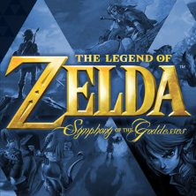

ベヨネッタ オリジナル サウンドトラック

ファイナルファンタジーVII オリジナル・サウンド・トラック
オールオーバー メルティブラッド ~ Melty Blood Actress Again for Limited Edition Original Sound Track

Fumio Ito
Hidenori Syoji
バーチャファイター 3 SOUND TRACKS

Jag har aldrig riktigt lyssnat på annan musik än det som kommer från de spel jag spelat. Jag har också aldrig riktigt brytt mig om album och artister.
Det fanns en hel del Eurobeat jag ville lägga till i denna tabell, men de flesta album har alledels för många artister och man kan inte riktigt kalla artisterna i dessa album för "band" tycker jag...
Jag tror inte det gör något om jag exkluderar Australien och Sverige som länder. Jag har absolut inget intresse för svenska band och har ingen aning om vad det finns för australianska. I tabellen nedan kan man hitta band från Japan, USA och United States. Under uppgiftens gång kännde jag att min kunskap om kompositörer och band utanför japan var mycket begränsad.
Jag tror det hade räckt med typ 5 stycken rader av album/artister. Lite mycket repetition att göra samma grej 10 gånger. Men jag antar att det är för att bygga upp muskelminne för att skriva tabeller och använda sig av länkar. Den är listan var inte enkel att fylla, men det var en intressant process.
Så yeah, nedan finner du ett par bra soundtrack och kanske ett enstakat band. Meningen med uppgiften var att bara använda tabeller och dess olika attribut. Jag har bara fyllt den med annat, men följer fortfarande samma format som exempel uppgiften på github.
| Omslag/Cover | Bandets namn | Medlemmar | Album | Land | Källa | |
|---|---|---|---|---|---|---|
|
PlatinumGames | Erina Niwa, Hiro, Hiroshi Yamaguchi, Masami Ueda, Naoto Tanaka, Norihiko Hibino, Rei Kondoh, Takahiro Izutani, Takayasu Sodeoka, Yoshitaka Suzuki | BAYONETTA Original Soundtrack ベヨネッタ オリジナル サウンドトラック |
Japan | Källa1 Källa2 | |
|
| Square Enix | Nobuo Uematsu | FINAL FANTASY VII: ORIGINAL SOUNDTRACK ファイナルファンタジーVII オリジナル・サウンド・トラック |
Japan | Källa | |
| TYPE-MOON | Raito, Yuki Kajiura | ALL OVER MELTY BLOOD ~ Melty Blood Actress Again for Limited Edition Original Sound Track オールオーバー メルティブラッド ~ Melty Blood Actress Again for Limited Edition Original Sound Track |
Japan | Källa | ||
|
Virtua Fighter, SEGA Sound Team | Takenobu Mitsuyoshi Fumio Ito Hidenori Syoji |
Virtua Fighter 3 Original Soundtrack バーチャファイター 3 SOUND TRACKS |
Japan | Källa1 Källa2 | |
| Undertale | Toby Fox | UNDERTALE SOUNDTRACK | USA | Källa | ||
|
Rainbowdragoneyes | Eric W. Brown | The Messenger Original Soundtrack | USA | Källa1 Källa2 | |
| SEGA/Richard Jacques | Richard Jacques | Sonic R Original Soundtrack | United Kingdom | Källa1 Källa2 | ||
|  | Chad Seiter | Insert members | The Legend of Zelda 25th Anniversary Special Orchestra CD | United Kingdom, United States, Mexico, Australia, Canada, Spain, Italy, Ireland, Germany, Poland, Czech Republic, Sweden, Portugal, Belgium, France, Switzerland, Netherlands, Austria, France, Chile, Japan | Källa1 Källa2 | |
| Insert cover art | Insert artist | Insert members | Insert album | Insert country | Insert source | |
| Insert cover art | Insert artist | Insert members | Insert album | Insert country | Insert source |
Av: Mattias Ståhlberg
Senast uppdaterat: 2021-02-20